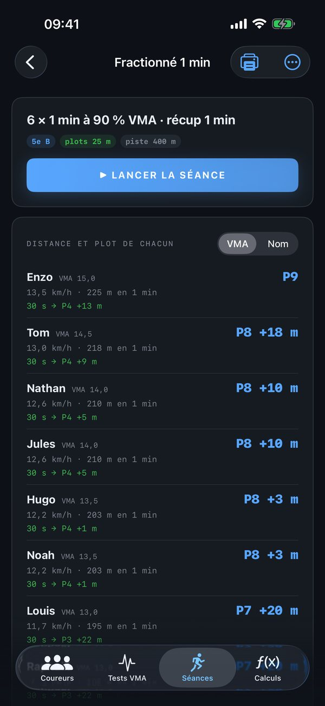
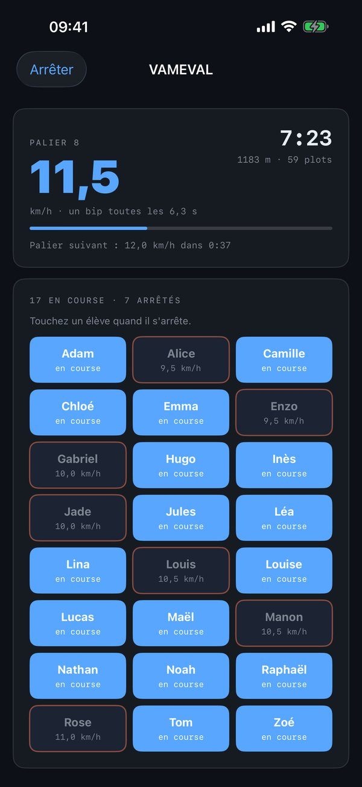
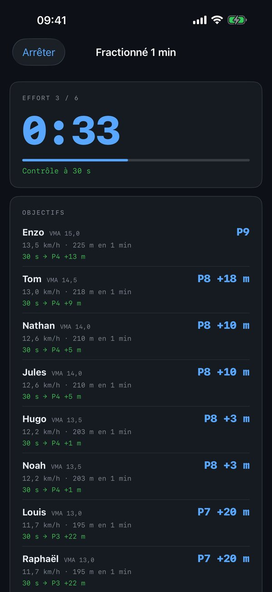
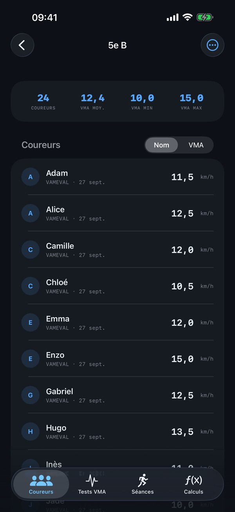

Lièvre
LièvreEn demi-fond, chacun court à son allure : un pourcentage de sa VMA. Lièvre est l'outil du professeur d'EPS et de l'entraîneur pour le faire vivre à tout un groupe : il mesure la VMA de chaque élève, calcule ses objectifs à chaque séance — la distance à parcourir et le plot à atteindre, ou le temps à tenir — et anime la séance au bip. Un seul iPhone, sans connexion, sans compte : les noms des élèves restent sur l'appareil.




Mesurer la VMA
- Test à paliers — l'app joue la bande-son : un bip quand chacun doit passer un plot, deux bips aigus et la voix à chaque nouveau palier. VAMEVAL (8 km/h, +0,5 km/h par minute, plots tous les 20 m), Léger-Boucher (8 km/h, +1 km/h toutes les 2 minutes, plots tous les 50 m) ou vos propres réglages. Vous touchez le nom d'un élève quand il s'arrête : la vitesse de son dernier palier terminé devient sa VMA.
- Demi-Cooper — 6 minutes chronométrées, chaque minute annoncée ; vous saisissez les distances, la VMA en découle (distance en mètres ÷ 100).
- Ou les VMA déjà connues, tapées ou collées avec la liste de la classe.
Une séance, un objectif par élève
Effort en durée ou en distance, intensité en pourcentage de VMA, répétitions, récupération, écart entre les plots, longueur de la piste, contrôles intermédiaires. Pour un effort en durée, chacun lit sa distance et le plot à atteindre (« P7 +5 m », « 1 tour + P3 ») ; pour un effort en distance, son temps et son allure. Des modèles pour démarrer : 30-30, fractionné, endurance, 3 × 500 m.
Au bip
« Lancer la séance » : départ dans 5 secondes, bip long au départ, bip aigu aux contrôles, trois bips à la fin de l'effort, compte à rebours de la récupération et voix qui annonce la répétition suivante. Pour un effort en distance, vous touchez chaque coureur à l'arrivée : son temps s'affiche avec l'écart à son objectif.
La feuille de la classe
Le tableau de la séance, élève par élève, en A4 : à imprimer pour le terrain ou à envoyer.
Le lièvre sonore
Un bip chaque fois qu'un coureur à la vitesse choisie passe un plot : pour un groupe de même niveau, ou pour apprendre une allure.
Et les calculs V·D·T
L'onglet Calculs garde le calculateur complet : vitesse, distance, temps et allure à partir de deux valeurs, en km, miles ou milles marins ; temps de passage ; prédictions de course (formule de Riegel) ; chronomètre à tours ; historique des 60 derniers calculs.
Sans rien de superflu
Pas de compte, pas de publicité, aucun achat intégré, aucune donnée collectée. Tout fonctionne sur l'iPhone, hors connexion. Gratuit.